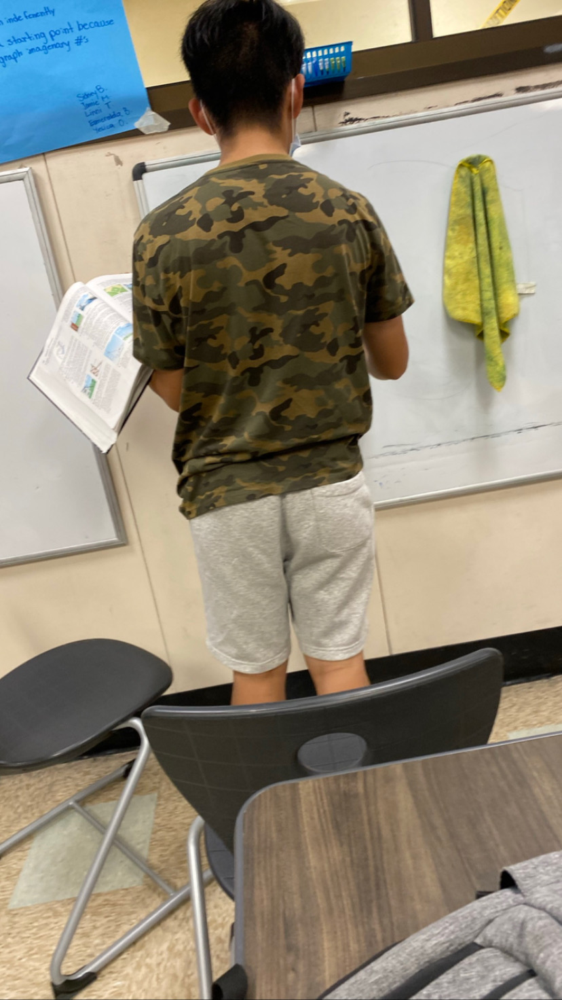
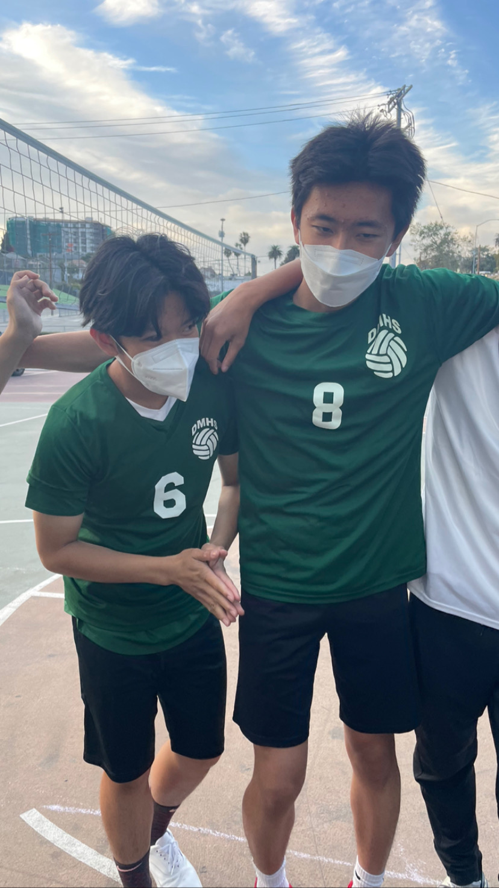
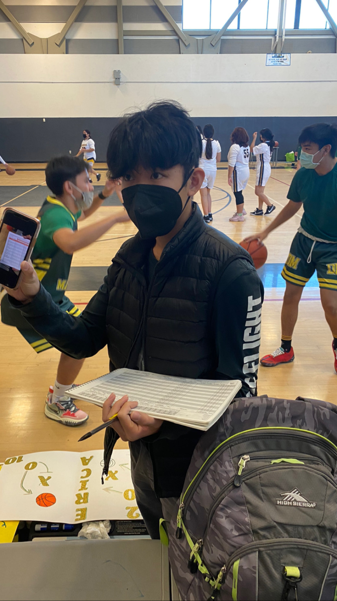
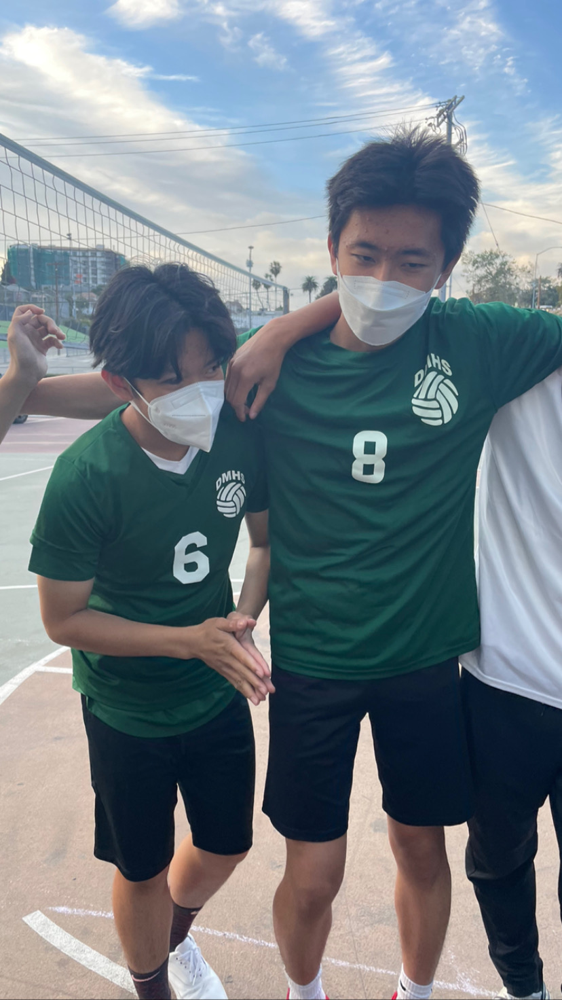
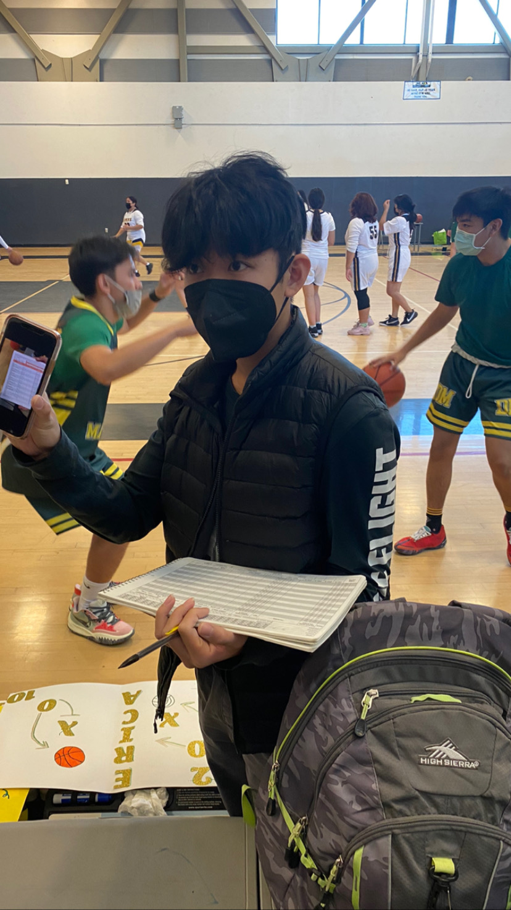

Andrew Tse
Current Student at the University of California Riverside
Liberal Arts Major
Persuing A Teaching Career
Experience
Tutor (UCLA Internship)
• Tutored for CSC as a volunteer outside of the internship as well
• Tutored students ranged from elemtary to middle school
• I also helped create coursework and answer sheets while tutoring
Volunteer
• The goal of BID was to bring back the culture and history of Chinatown to a broader audience of people through events that were hosted in Los Angeles Chinatown.
• When I first started I was a volunteer that helped clean up trash during the events. After a few events I became a coordinator in charge of the volunteer tent checking in on volunteers and helping them if they ever needed anything. During this time I also helped with the set-up and tear-down of the events.
Girls Basketball Team Manager
• Through my time as a team manager I assisted with many things. This includes helping with practices, warm-ups, scorekeeping, communicating with the team, etc.
• Although I was a manager by title, the coach often referred to me as his assistant coach throughout the season as I tried my best to assist both him and the team through their needs.
Education
University of California Riverside
Portfolio




 